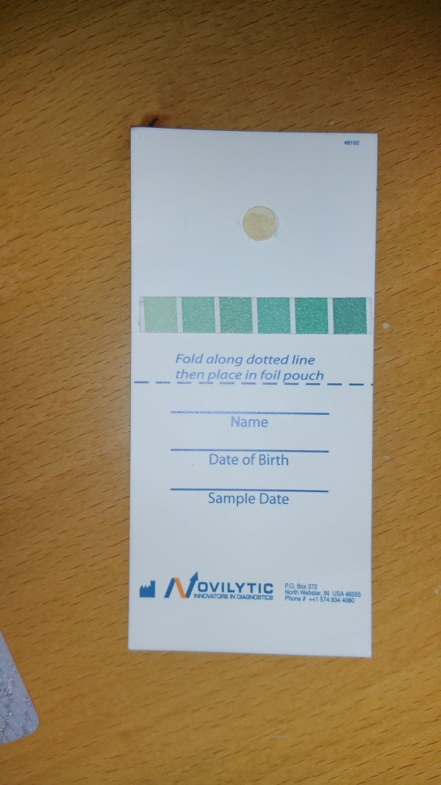
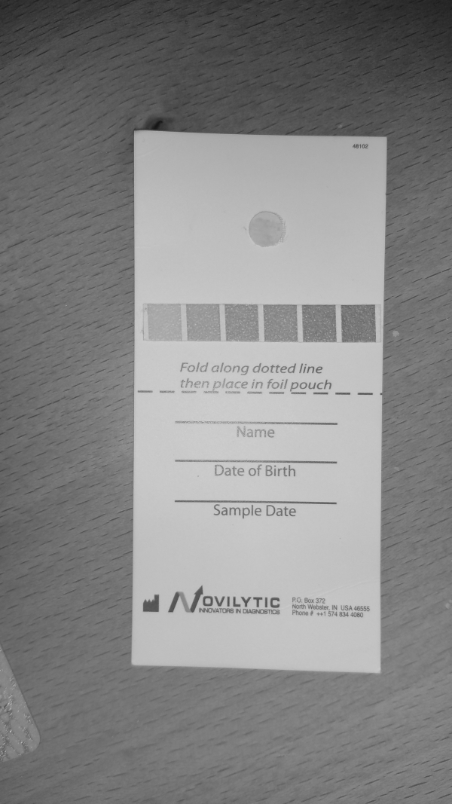
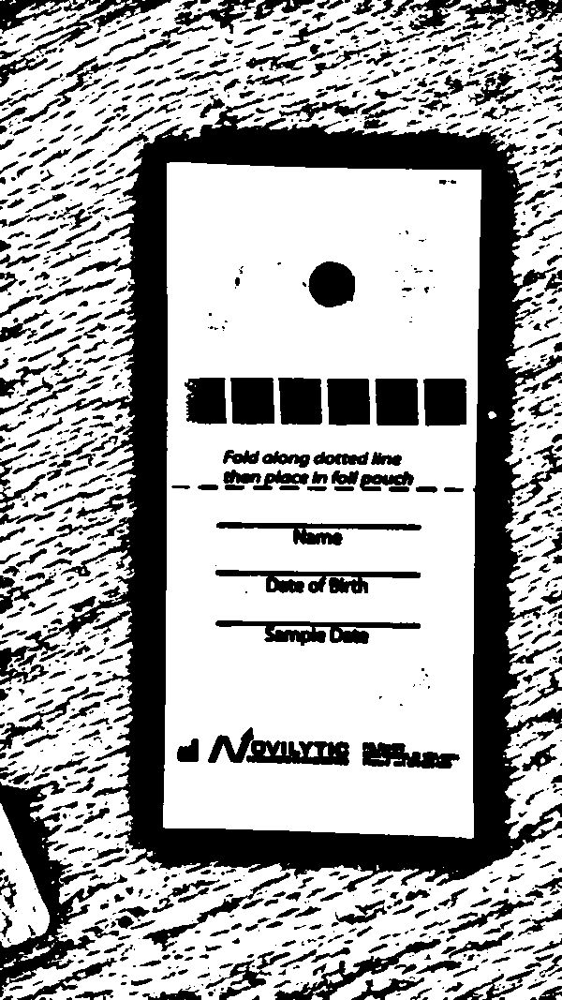
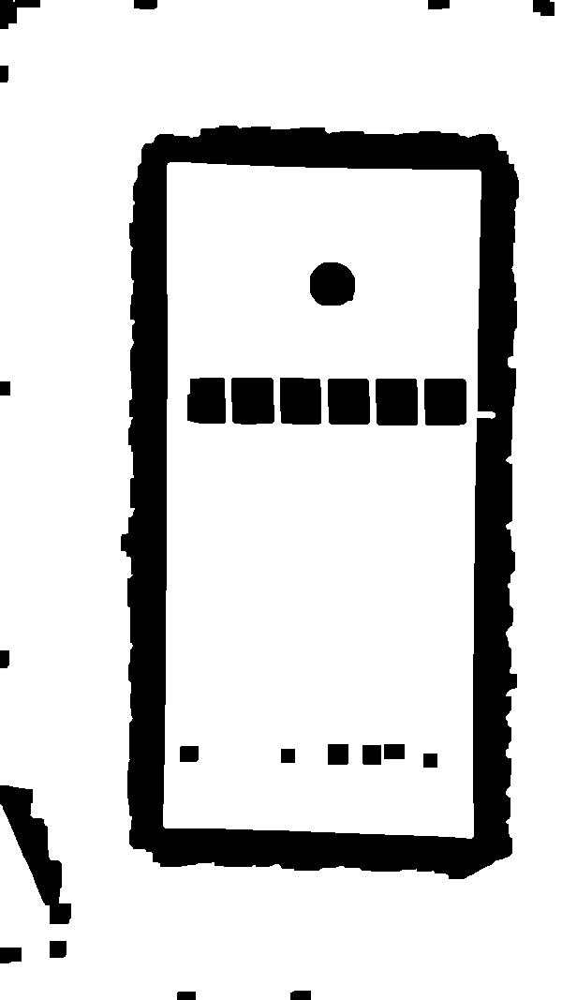
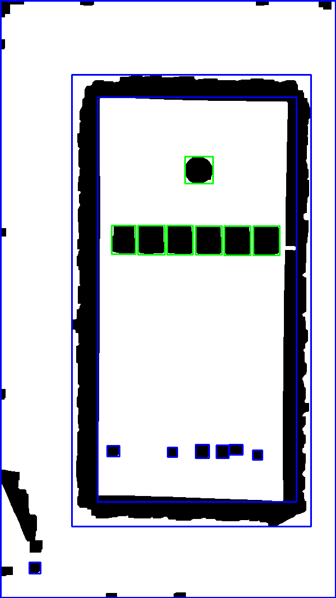
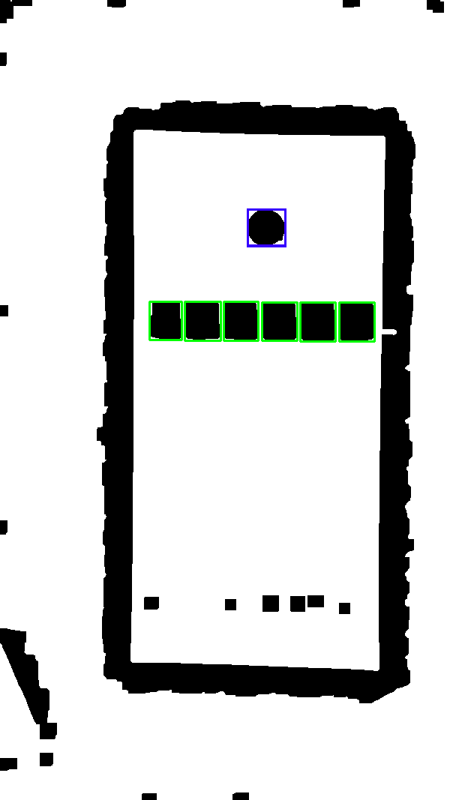
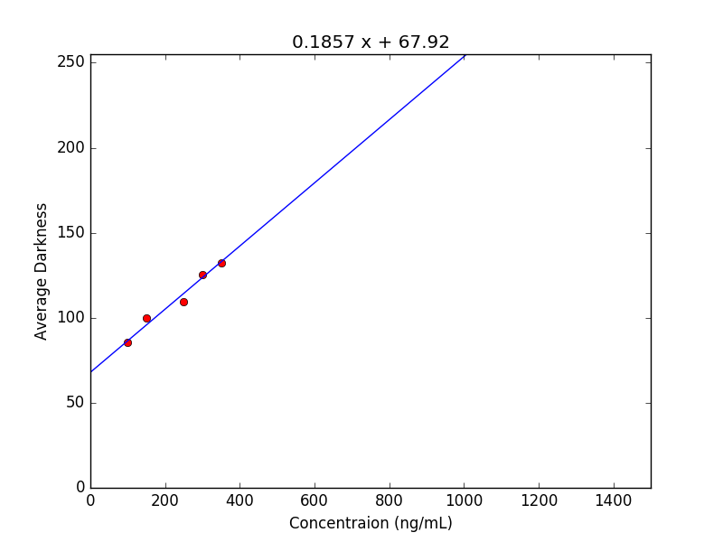
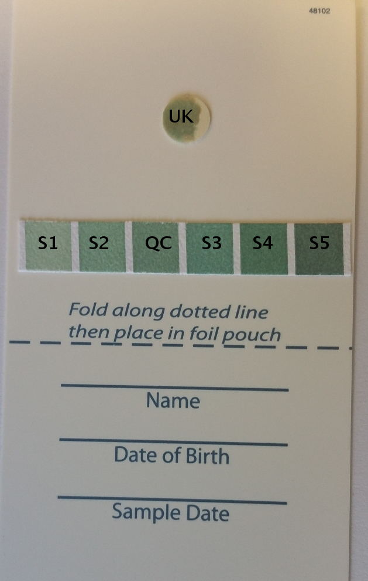

The aim of this project is to use the camera and processing power of modern day cell phones to develop an intuitive and user-friendly application for the detection and concentration estimation of various biomarkers in blood sample images. It is later planned to be used as a screening test for cancer. The application will allow the user to take images of the blood samples in a set format. The image will then be segmented to detect the regions of interest. After noise removal, the intensity of each individual blob will be calculated. A linear curve will be fit through the intensity and known concentration data and the concentrations of the unknown samples will be estimated from the standard curve which will quantify the various molecules present in the sample.
Details of the Algorithm Used
Let \(I_{raw}\) be the original image of the test card in portrait scaled to a width of 600 while maintaining the aspect ratio.

\(I_{raw}\) : The Raw Image
Convert \(I_{raw}\) to grayscale to get \(I_{gray}\).

\(I_{gray}\) : The Raw Image in Grayscale
Apply 5x5 Gaussian Blur to \(I_{gray}\) to get \(I_{gb}\).
\(I_{gb}\) : Gaussian Blurred \(I_{gray}\)
Apply Adaptive Threshold to \(I_{gb}\) with a block-size of 85, C-value of 2 and method MEAN_C to get a binary image \(I_{th}\).

\(I_{th}\) : \(I_{gb}\) after Adaptive Threshold
Apply morphological closing to \(I_{th}\) using a rectangular structuring element of size 15x15 to get \(I_{mo}\).

\(I_{mo}\) : \(I_{th}\) after Morphological Closing
Find the contours in \(I_{mo}\) and filter the found contours based on following criteria.
Area bounded by the contour lies between 1000 and 16000.
Aspect ratio of the rectangle bounding the contour lies between 1 and 1.5.

Green and Blue boxes represent contours satisfying and not satisfying the set criteria respecively
Find the co-ordinates of center of all rectangles bounding these filtered contours.
Check the number of rectangular regions which lie within \(\pm15\) pixels in \(Y\) direction. If exactly 6 such regions are found, the algorithm proceeds. These six regions represent the standard and quality control samples.
Find another blob whose center is at least 20 pixels away from the centers of the standard samples in the \(Y\) direction and lies approximately in the horizontal center of the 6 blobs.

The Final Detections. Green: Standard and Quality Control samples, Blue: Unknown sample.
For each blob \(B\) of the 7 blobs.
Clip the rectangular portion bounding \(B\) from \(I_{gray}\) to get \(R_{gray}\).
Apply Otsu's binarization to \(R_{gray}\) to get \(R_{th}\).
Iterate over every pixel of \(R_{gray}\) and sum the intensities of all pixels where \(R_{th}\) is 0. Let the sum be \(S\).
Calculate average \(A = S/N\) where is \(N\) is the number of pixels in \(R_{th}\) with value 0.
Using the average intensity values and known concentration values of the five standard samples to train a linear regression model to get slope and intercept of the curve.

The Linear Regression
Calculate the concentration of the quality control and unknown samples using the slope and intercept values.
Check if the calculated concentration value of quality control sample lies within 20% error bound.
Usage
Android Phone
On your Android phone go to Settings > Security and Allow installation of apps from unknown sources.
Choose Load Image option and open image of the card with blood sample. Images of this dataset can be used. To be able to use the Take Picture option, you need to have a physical test card. You can get a printout of one of these images and use it instead for testing.
Make sure that the image is loaded in portrait orientation. Rotate if necessary.
Tap on Analyze. If the analysis is successful, the detected regions of interest will be highlighted using green color.
Tap on each detected blob to enter its details. Concentrations of Standard and Quality Control samples are given below.

S1, S2, S3, S4, S5: Standard Samples, QC: Quality Control Sample, UK: Unknown Sample
Sample Name
Concentration (ng/mL)
S1
100
S2
150
S3
250
S4
300
S5
350
QC
200
Tap on Results and the estimated concentration of the unknown sample will be shown. The result will only be shown if the estimated concentration of the Quality Control Sample lies within 20% error bound.
A video showing entire usage flow with both demo mode on and off is shown below.
Source
This project has been created from scratch and the sources for Android Studio can be found in this repository.